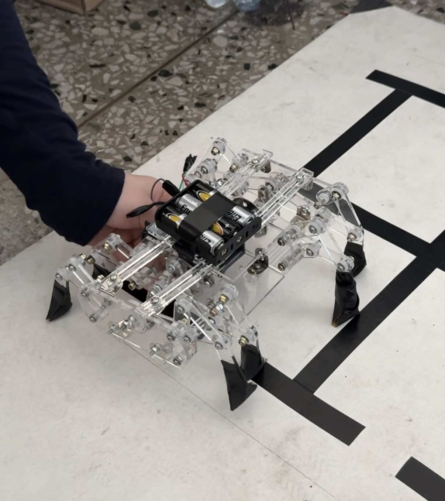
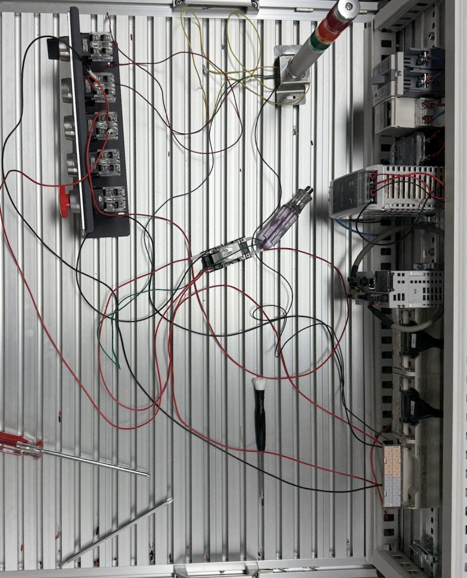
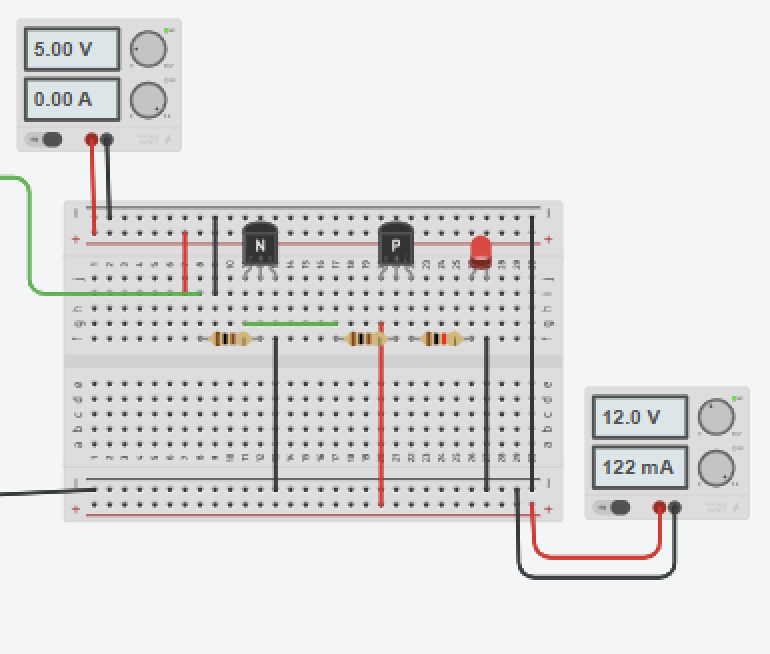
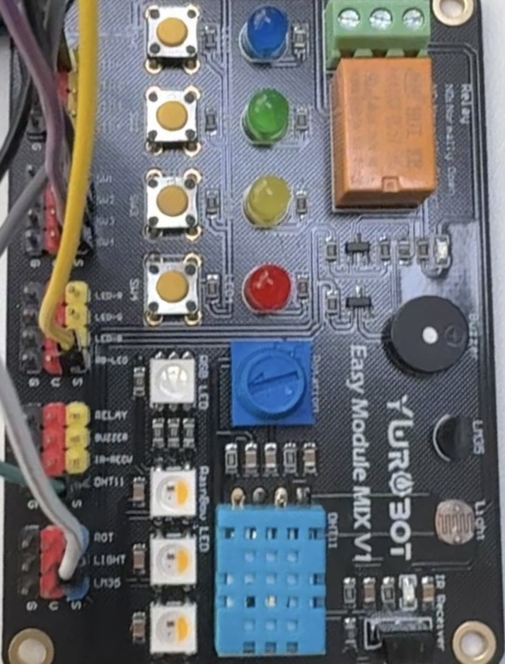

Get In Touch
반도체 장비 제어 및 Customer Engineer 직무에 관한 문의나 제안은 아래 양식을 통해 보내주세요.
Email
문의 양식을 작성해 주세요
Resume
원미고등학교 졸업 및 부천대학교 자동화로봇과 입학을 통해 로봇 공학 기초 소양을 확립하며 프로젝트 수행의 기틀을 다졌습니다.
장비 고장 등 돌발 상황에서 매뉴얼에 따라 대처하는 위기 대처 역량을 기르고, 군 조직 내에서 협력과 규율을 체득했습니다.
동양미래대학교 심화 학업과 편의점 매장 관리 아르바이트를 병행하며, 현장 책임감과 시간 관리 능력을 동시에 증명하고 있습니다.
전공 기초부터 실무 심화까지, 로봇 소프트웨어 전문가로 성장하는 체계적인 학습 경로입니다.
고가 반도체 장비 운용 매뉴얼을 엄격히 준수하여 사고 예방 및 장비 안정성을 최우선으로 확보합니다.
H/W와 S/W 지식을 결합해 장비의 로그를 분석하고 원인을 신속하게 특정합니다.
고객사의 생산 라인 중단을 최소화하기 위해 장비 가동률(Uptime) 극대화를 목표로 합니다.

단일 모터와 Klann Linkage 구조를 결합하여 안정적인 연속 보행을 구현한 기구 제작 프로젝트

FluidSIM 시뮬레이션과 릴레이/솔레노이드 실전 배선을 통한 자동화 설비 제어 실습

KiCad를 활용한 기초 전장 도면 스케치 및 BJT 동작 특성 분석 실습

Arduino Mega와 Easy Module Mix V1을 활용한 온습도·조도 센서 통합 모니터링 시스템 구축
반도체 장비 제어 및 Customer Engineer 직무에 관한 문의나 제안은 아래 양식을 통해 보내주세요.
문의 양식을 작성해 주세요